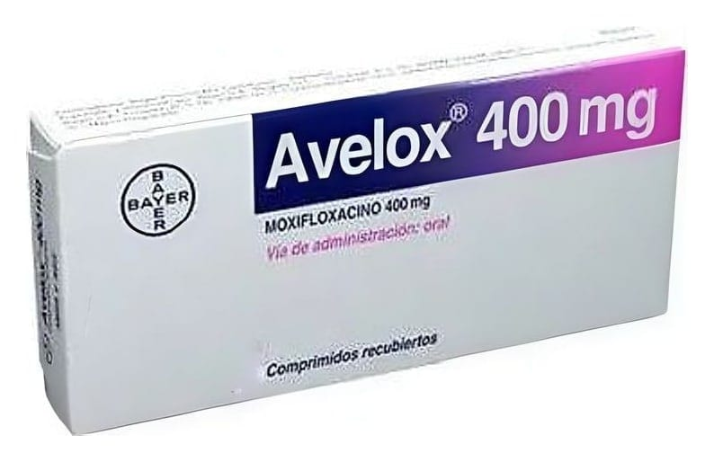

Avelox 400 mg Film Kaplı Tablet, 7 Adet

Ne için kullanılır
KT · Bölüm 1• AVELOX, mat-kırmızı, 17x7 mm boyutunda oblong, bir yüzünde M400, diğer yüzünde Bayer baskısı bulunan film kaplı tabletler şeklinde kullanıma sunulmuştur. Her bir film kaplı tabletin içinde 400 mg etkin madde (moksifloksasin) bulunmaktadır.
• AVELOX’un etkin maddesi olan moksifloksasin, florokinolon grubu bir antibiyotiktir. Enfeksiyonlara neden olan değişik türlerdeki bakterileri öldürerek etkisini gösterir. AVELOX laktoz monohidrat (inek kaynaklı) içermektedir.
AVELOX, diğer bazı antibiyotiklere karşı dirençli olan çok sayıda bakteriye karşı da bakteri öldürücü etki göstermektedir (örn. beta-laktam ve makrolid dirençli bakteriler). Penisilin, sefalosporin, aminoglikozid, makrolid ve tetrasiklin grubu antibiyotikleri etkisiz kılan direnç mekanizmaları, moksifloksasinin bakteri karşıtı (antibakteriyel) etkisini engellememektedir.
• AVELOX, 7 tablet içeren blister ambalajlar şeklinde kullanıma sunulmuştur.
• AVELOX, duyarlı mikroorganizmaların (mikroplar) neden olduğu aşağıdaki enfeksiyon hastalıklarının tedavisinde kullanılmaktadır: - Kronik bronşitin (akciğerlere giden havayollarının iç yüzeyinin uzun süreli iltihaplanması) aniden kötüleşmesi, - Hastane dışında oluşmuş akciğer enfeksiyonu (toplumdan edinilmiş pnömoni), - Akut sinüzit (yeni gelişen sinüs (yüz kemikleri arasında yer alan boşlukların) iltihaplanması), - Başka bir tablonun eşlik etmediği (komplike olmayan) deri ve yumuşak doku (deri ile kemik arasında kalan vücut bölümlerinin) enfeksiyonları, - Kadın üreme organlarının üst bölümünde görülen (pelvik) leğen kemiği içindeki iltihabi hastalıkta, - Durumu güçleştiren başka tıbbi durum ya da hastalıklarla birlikte bulunan (komplike) deri ve yumuşak doku (deri ile kemik arasında kalan vücut bölümlerinin) enfeksiyonları; diyabet (şeker) hastalığındaki ayak yarası enfeksiyonları dahil, - Komplike karın içi enfeksiyonları; apse gibi çeşitli türlerden mikropların neden olduğu enfeksiyonlar dahil.
• AVELOX’un da dâhil olduğu ilaç grubu (florokinolonlar), akut bakteriyel sinüzit ve kronik bronşitin akut bakteriyel alevlenmesinde (akciğerlere giden havayollarının iç yüzeyinin uzun süreli iltihaplanması durumunun yeniden şiddetlenmesi) alternatif tedavi seçeneklerinin varlığında ciddi istenmeyen etki riski nedeniyle kullanılmamalıdır. AVELOX, yalnızca duyarlı bakterilerin yol açtığı kanıtlanmış ya da bu konuda ciddi şüphe bulunan enfeksiyonların tedavisinde kullanılabilir.